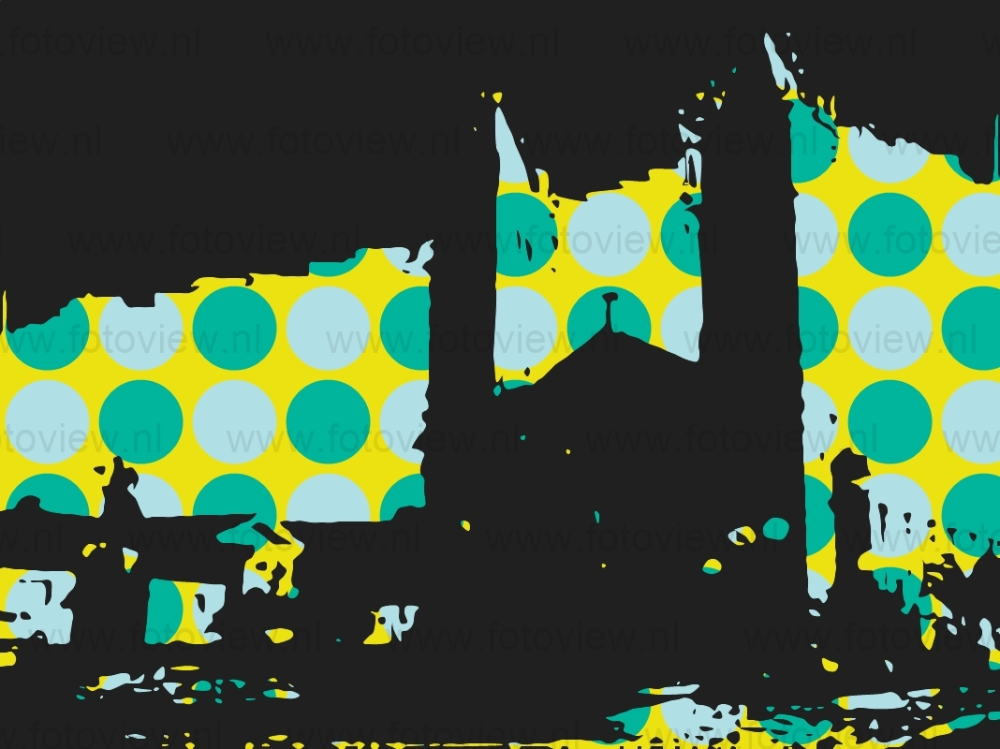

Sua história começou por volta de 1630, quando da adentrada ao Rio Ribeira por exploradores portugueses que estavam à procura de veios de ouro. Surgiram as primeiras povoações, denominadas de arraiais de mineração, às margens do Rio Ribeira de Iguape, com destaque para os povoados de Ivaporunduva e Jaguary. Por volta de 1750, ergueu-se um novo povoado a cerca de vinte quilômetros rio abaixo da localidade de Jaguary (atual Itapeúna): era o povoado de Xiririca. O nome era referência à palavra em tupi-guarani para água corrente.[8] Em 16 de janeiro de 1757, os irmãos Veras, de importante família de colonizadores, doaram duas casas no povoado de Xiririca, para que ali se construísse uma capela, e, em 8 de setembro, a capela, já pronta, recebeu a imagem de Nossa Senhora da Guia (atual padroeira do município). Em 13 de janeiro de 1763, o povoado passou à categoria de freguesia. Após a ocorrência de duas grandes enchentes, em 19 de janeiro de 1807 e em 28 de janeiro de 1809, muito se discutiu sobre a possibilidade de transferência da capela e da freguesia de local. Depois de muitos conflitos em torno da mudança, entre 1816 e 1834, finalmente, em 10 de março de 1842, o Barão de Monte Alegre, presidente da província, assinou a lei que elevou Xiririca à categoria de vila[9] (equivalente atualmente a município), mas apenas em 2 de maio de 1845 foi instalada a primeira câmara municipal, sob a presidência do padre Joaquim Gabriel da Silva Cardoso. Em 1942, quando comemorou seu centenário, Xiririca tinha cerca de trinta mil habitantes, sendo dois mil na zona urbana.[9]Seis anos depois, seu nome foi alterado para Eldorado, mudança inspirada pela corrida do ouro, assim como nas cidades vizinhas de Sete Barras (sete barras de ouro foram descobertas ali) e Registro (era lá que o ouro era registrado).[8]
